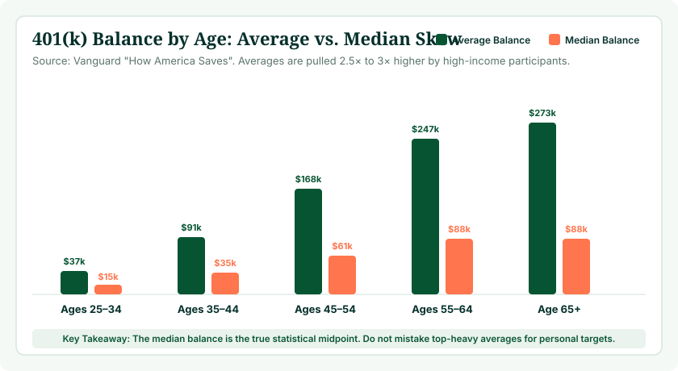

When workers ask, “How much should I have in my 401(k) at my age?”, they are usually looking for a clear, reassuring milestone. However, there is no single dollar amount that applies equally to every 30-year-old, 40-year-old, or 60-year-old. A 40-year-old earning $50,000 with modest living expenses requires a completely different retirement portfolio than a 40-year-old earning $175,000 who maintains an expensive lifestyle. Your ideal 401(k) balance depends on your current income, your contribution rate, employer matching, your target retirement age, expected Social Security benefits, and long-term investment returns.
Instead of relying on broad population statistics that blend corporate executives with entry-level workers, the most reliable way to evaluate your personal progress is to use our interactive 401(k) Calculator. By testing your actual salary, current savings, deferral rate, and employer match formula, you can establish an authentic, personalized savings trajectory tailored to your financial goals.
Quick Summary: Age-Based Multiples vs. Single Balances
Financial planning firms such as Fidelity and J.P. Morgan measure retirement readiness in multiples of annual salary rather than fixed dollar values. Common targets recommend saving 1x your salary by age 30, 3x by 40, 6x by 50, 8x by 60, and 10x by 67. Because retirement expenses mirror your pre-retirement earnings, salary multiples provide a far more reliable benchmark than raw averages.
What Does “401(k) Balance by Age” Actually Mean?
When reviewing financial headlines or survey data, the phrase “401(k) balance by age” is often used interchangeably to describe four fundamentally different measurements. Confusing these terms can lead to unnecessary financial anxiety or dangerous complacency:
- Average 401(k) Balance: The total sum of all balances in a specific age cohort divided by the total number of plan participants. Because high-income professionals and long-tenured employees hold multi-million-dollar balances, averages are skewed dramatically upward—often by 2.5x to 3x above what most participants actually hold.
- Median 401(k) Balance: The exact middle value of the dataset, where 50% of participants hold more and 50% hold less. The median is the most accurate reflection of the typical American worker's savings at any given age.
- Retirement Savings Benchmark: A theoretical savings target proposed by institutional actuaries (such as 1x salary by 30 or 3x by 40) designed to replace 70% to 80% of your pre-retirement income in retirement when paired with Social Security.
- Personal Retirement Target: The precise dollar nest egg required to fund your specific lifestyle, taking into account housing status, debt, retirement location, pension rights, and health expectations.

401(k) Balance by Age Chart: Overview by Decade
Rather than obsessing over rigid dollar numbers, retirement planning across your career should follow distinct strategic priorities. The table below outlines what participants should focus on during each phase of their accumulation and transition years:
| Age Range | Typical Planning Focus | Recommended Benchmark Multiple | Key Strategic Action |
|---|---|---|---|
| 20–29 | Habit formation & compound runway | 0.5× to 1.0× Annual Salary | Capture 100% of employer match; establish automatic 1% annual contribution escalators. |
| 30–39 | Accelerating savings & promotion gains | 1.0× to 3.0× Annual Salary | Aim to increase total savings rate toward 15% (employee + match); avoid 401(k) loan leakage. |
| 40–49 | Peak earning years & compounding tipping point | 3.0× to 6.0× Annual Salary | Investment returns typically start generating more annual growth than direct employee contributions. |
| 50–59 | Catch-up contributions & timeline audit | 6.0× to 8.0× Annual Salary | Utilize IRS age 50+ catch-up limits; audit portfolio risk allocation and eliminate high-cost funds. |
| 60–64 | Pre-retirement de-risking & Social Security planning | 8.0× to 10.0× Annual Salary | Coordinate retirement date with Social Security claiming age; test distribution cash flow models. |
| 65+ | Decumulation, RMDs & tax-efficient withdrawals | 10.0×+ Annual Salary | Execute disciplined 3.5% to 4.0% withdrawal strategy; prepare for Required Minimum Distributions (RMDs). |
How Much Should You Have in Your 401(k) at Age 30?
At age 30, most workers are roughly five to eight years into their primary career. A widely cited industry guideline suggests having 1x your current annual salary accumulated across your retirement accounts by your 30th birthday. If you earn $60,000 per year, your target benchmark is approximately $60,000.
However, many 30-year-olds find themselves below this figure due to student loan repayments, graduate schooling, early career transitions, or saving for a first home down payment. Falling short of 1x salary at age 30 is neither uncommon nor fatal to your retirement security. Because you still have 35 to 37 years of investment horizon ahead of you, compound interest is on your side. What matters far more than your current dollar balance at 30 is establishing an aggressive contribution rate—ideally 10% to 15% including employer matching—and investing in low-cost broad-market index funds.
See What Your Current Balance Could Become
Enter your exact age, current balance, and contribution percentage to simulate your future nest egg across 10, 20, and 30 years.
Launch 401(k) Calculator →How Much Should You Have in Your 401(k) at Age 40?
By age 40, you are entering your peak earning years. Financial planning models typically recommend having 3x your annual salary accumulated by age 40. For a professional earning $90,000, that translates to a benchmark target of $270,000; for a worker earning $50,000, the target is $150,000.
Age 40 represents an essential mathematical inflection point in wealth accumulation. Up until your late thirties, your annual account growth was driven predominantly by your personal payroll deductions and employer matches. By age 40, a $250,000 balance generating an average 7% annual return produces $17,500 in market returns alone—often eclipsing your annual payroll contributions. If your balance at 40 is behind the 3x benchmark, now is the time to raise your contribution rate by 1% to 2% with every pay raise.
How Much Should You Have in Your 401(k) at Age 50?
At age 50, the recommended planning guideline is 6x your annual salary. If your household earnings are $110,000, your target nest egg is approximately $660,000. At this juncture, retirement is roughly 15 to 17 years away, giving you adequate runway to stage an aggressive catch-up strategy if you are lagging behind.
Turning 50 unlocks a key provision under IRS regulations: catch-up contributions. For 2026, participants aged 50 and older can contribute an additional $7,500 beyond the standard $23,500 elective deferral limit, enabling an annual contribution of up to $31,000 in pre-tax or Roth 401(k) dollars. Furthermore, the SECURE 2.0 Act introduced higher catch-up limits for workers aged 60 through 63, allowing late-career workers to dramatically accelerate accumulation.
How Much Should You Have in Your 401(k) at Age 60?
By age 60, retirement planning shifts from theoretical accumulation to concrete distribution logistics. The conventional benchmark at age 60 is 8x your annual salary ($640,000 for an $80,000 earner; $960,000 for a $120,000 earner).
At age 60, your 401(k) target cannot be examined in isolation. It must be directly coordinated with your planned Social Security claiming strategy. Retiring at 62 results in a permanent 30% reduction in monthly Social Security benefits compared to your Full Retirement Age (67 for everyone born in 1960 or later). If you plan to retire before age 67, your 401(k) must serve as a temporary bridge to fund expenses, requiring a larger nest egg. Use our Social Security Age Calculator to model the trade-offs between claiming at 62 versus waiting until 67 or 70.
How Much Should You Have in Your 401(k) at Age 65?
By age 65 to 67, benchmarks recommend having 8x to 10x your final annual salary saved. For an individual with pre-retirement earnings of $85,000, a 10x target yields an $850,000 nest egg. Assuming a standard 4% annual withdrawal rate, an $850,000 portfolio generates $34,000 in annual inflation-adjusted retirement income. When combined with an average Social Security benefit of $24,000 to $28,000 per year, total annual retirement income reaches $58,000 to $62,000—successfully replacing roughly 70% to 73% of pre-retirement gross earnings.
However, age 65 is no longer the mandated retirement age. Millions of workers choose to work until 68 or 70, allowing their investments to continue compounding without withdrawals while accumulating delayed retirement credits on Social Security.
Why Your Income Matters When Comparing 401(k) Balances
The single greatest flaw in comparing raw 401(k) dollar amounts across peer groups is that a fixed dollar balance represents entirely different financial realities depending on your salary and standard of living.
Consider two 40-year-old coworkers who both hold exactly $100,000 in their 401(k) accounts:
- Worker A earns $50,000 per year: Their $100,000 balance represents 2.0x their annual salary. They are only slightly below the 3x benchmark at age 40 and can comfortably achieve retirement readiness by maintaining a standard 10% to 12% total contribution rate.
- Worker B earns $150,000 per year: Their $100,000 balance represents only 0.67x their annual salary. Because Worker B has adapted to a $150,000 annual lifestyle, retiring comfortably will require replacing a substantial portion of that income. Worker B faces a significant savings deficit and must contribute aggressively (18% to 22%) to close the gap.

Why Starting Age Dictates Your Lifetime Trajectory
The math of compound growth heavily rewards the years your money spends in the market. In our companion guide on how a 401(k) grows over time, we explore how early contributions do the heavy lifting of lifetime wealth creation.
Consider an investor who starts contributing $500 per month ($6,000 per year) at age 25 with a 7% average annual return. By age 65, their portfolio grows to approximately $1,268,000 on total out-of-pocket contributions of just $240,000. If that same investor delays starting until age 35, contributing the exact same $500 per month for 30 years yields approximately $590,000. Waiting 10 years cuts the eventual retirement balance by more than half, demonstrating why building savings habits in your twenties creates an enormous structural advantage.
How Employer Matching Supercharges Your Balance
Two workers with identical salaries, identical contribution percentages, and identical investment allocations can end up with radically different 401(k) balances at age 50 simply due to their employer's matching formula. In our guide to the 401(k) calculator with employer match, we demonstrate how matching acts as an immediate, guaranteed boost to your savings rate.
A typical match formula offers 50% on employee contributions up to 6% of salary, providing a 3% company contribution. Over 30 years on an average $75,000 salary, that 3% employer match adds over $225,000 in compound balance at retirement—entirely funded by company contributions and their compound returns. Always contribute at least enough to capture your complete company match before allocating savings elsewhere.
How Your Contribution Rate Directly Dictates Your Future Nest Egg
While investment returns are subject to market fluctuations, your savings rate is the one variable entirely within your control. Increasing your contribution percentage by just a few points creates dramatic compounding divergence over a career:
| Annual Salary | Contribution Rate | Annual Employee Savings | Estimated Balance After 25 Years (7% Return) |
|---|---|---|---|
| $80,000 | 5% | $4,000 | $253,000 |
| $80,000 | 10% | $8,000 | $506,000 |
| $80,000 | 15% | $12,000 | $759,000 |
| $80,000 | 20% | $16,000 | $1,012,000 |
To evaluate what savings rate matches your retirement goals, explore our comprehensive breakdown on how much you should contribute to your 401(k).

Average 401(k) Balance vs. How Much You Should Have
One of the most common mistakes workers make is comparing their account statement to published national averages and concluding they are in good shape. According to Vanguard's How America Saves data:
- Ages 25–34: Average balance is ~$37,000; Median balance is ~$15,000.
- Ages 35–44: Average balance is ~$91,000; Median balance is ~$35,000.
- Ages 45–54: Average balance is ~$168,000; Median balance is ~$61,000.
- Ages 55–64: Average balance is ~$247,000; Median balance is ~$88,000.
- Age 65+: Average balance is ~$273,000; Median balance is ~$88,000.
Notice the massive chasm between averages and medians. In the 55–64 bracket, the average balance ($247,000) is almost triple the median balance ($88,000). More importantly, neither $88,000 nor $247,000 is sufficient to fund a comfortable 25-year retirement without substantial supplemental income. Published averages reflect where participants currently stand, not where they need to be for financial independence.
Should You Compare Your 401(k) Balance With People Your Age?
The short answer is no. Comparing your account balance to peers is an unreliable yardstick because you cannot see the full picture of their balance sheet:
- Your peer may have a low 401(k) balance because they hold a fully funded defined-benefit state pension.
- They may have rolled previous 401(k) balances into a Traditional IRA or Roth IRA that doesn't appear in workplace plan statistics.
- They may have significant equity in real estate, small businesses, or taxable brokerage accounts.
- Conversely, a coworker with a large 401(k) balance may carry debilitating credit card debt, medical liens, or private student loans.
401(k) Balance Benchmarks by Age: How Rules of Thumb Work
Institutional retirement frameworks evaluate adequacy using three primary methodologies:
- Income Multiples: Setting milestone targets based on your salary (e.g., 1x at 30, 3x at 40, 6x at 50, 8x at 60, 10x at 67). This is the simplest and most widely used benchmark.
- Percentage of Salary Saved: Measuring the discipline of saving 15% of gross income annually throughout your working life, regardless of starting balance.
- Cash Flow Replacement Need: Calculating how much annual income your portfolio must generate to cover your projected retirement living expenses (typically 75% to 80% of final earnings minus Social Security).
What If Your 401(k) Balance Is Below the Benchmark?
Discovering that your 401(k) balance is below the recommended benchmark for your age is common, but it is not a reason to panic. Take the following proactive steps:
- Increase your contribution by 1% today: Gradually increasing your payroll deduction by 1% every six months minimizes the impact on your take-home pay while significantly accelerating accumulation.
- Direct bonuses and raises to retirement: Whenever you receive a merit increase or bonus, allocate half of the net increase to your 401(k) before lifestyle inflation absorbs it.
- Audit investment fees: High fund expense ratios (e.g., 0.85% vs 0.04%) erode tens of thousands of dollars over time. Shift into low-cost index funds.
- Evaluate your planned retirement age: Working just two additional years (e.g., from age 65 to 67) has a triple benefit: your portfolio compounds for two more years, you contribute for two more years, and you avoid two years of portfolio withdrawals.
What If Your 401(k) Balance Is Above the Benchmark?
If your balance exceeds the standard age benchmark, congratulations—your savings discipline is paying dividends. However, being ahead of the benchmark does not automatically guarantee you can retire tomorrow. You must still account for:
- Healthcare costs before Medicare: If you retire prior to age 65, private health insurance premiums and out-of-pocket medical costs can be substantial.
- Taxes on Traditional 401(k) withdrawals: Every dollar withdrawn from a Traditional 401(k) is taxed as ordinary income at your marginal rate.
- Inflation and market sequence of returns: Early retirement extends your distribution phase to 30 or 40 years, increasing exposure to long-term inflation risk.
How to Calculate Your Personal 401(k) Target in 8 Steps
Rather than relying on generic charts, follow this 8-step process to establish your custom retirement target:
- Step 1 — Determine Target Retirement Age: Decide when you want to stop working (e.g., age 62, 65, or 67).
- Step 2 — Estimate Annual Retirement Living Expenses: Aim for approximately 75% to 80% of your current gross income as a starting estimate.
- Step 3 — Subtract Guaranteed Income: Deduct your expected Social Security benefit and any defined-benefit pension from your annual spending need.
- Step 4 — Calculate Portfolio Income Gap: The remaining dollar amount is what your investments must produce each year.
- Step 5 — Apply the 4% Rule: Multiply your annual portfolio income gap by 25 to find your target nest egg (e.g., $40,000 gap × 25 = $1,000,000).
- Step 6 — Review Current 401(k) Balance: Check your current account balance across all 401(k) and IRA accounts.
- Step 7 — Model Growth & Contributions: Use the 401(k) Calculator to project how your current savings and future contributions will bridge the gap.
- Step 8 — Calibrate Savings Annually: Revisit your numbers once per year to adjust for raises, market performance, and life changes.
401(k) Balance Example: Two Real-World Scenarios
To see how these principles interact, consider two real-world case studies:
Case Study A: Marcus (Age 35, Mid-Career Calibration)
Current Age: 35 | Salary: $85,000 | Current Balance: $75,000
Contribution: 8% ($6,800/yr) | Employer Match: 50% up to 6% ($2,550/yr) | Total Savings: $9,350/yr (11%)
Target Retirement: Age 65 (30-year horizon)
Analysis: At age 35, Marcus's $75,000 balance is roughly 0.88x his salary (slightly below the 1.5x–2.0x benchmark). However, by maintaining his 11% total contribution rate at an assumed 7% annual return, his balance is projected to reach approximately $1,515,000 by age 65—comfortably surpassing his 10x retirement target.
Case Study B: Sarah (Age 52, Late-Career Acceleration)
Current Age: 52 | Salary: $115,000 | Current Balance: $310,000
Contribution: 15% plus catch-up ($24,750/yr) | Employer Match: 4% ($4,600/yr) | Total Savings: $29,350/yr
Target Retirement: Age 66 (14-year horizon)
Analysis: Sarah holds ~2.7x her salary, below the 6.0x benchmark for age 50. Recognizing the shortfall, she aggressively raised her contribution into the catch-up zone. With $29,350 annual contributions compounding at 6.5% for 14 years, her balance will grow to approximately $1,425,000, successfully closing the gap before retirement.
How Much Should Your 401(k) Grow Each Year?
Many investors mistakenly expect their 401(k) to grow by a smooth 7% every twelve months. In reality, market returns are volatile: a single year might deliver a +24% gain, followed by a flat year (+1%), followed by a -12% decline. In our deep-dive analysis on what rate of return to use for a 401(k) calculator, we show why multi-decade annualized averages (typically 6% to 8% before inflation) are appropriate for long-term planning, while short-term swings must be anticipated without panic.
Factoring In Inflation: Nominal vs. Real 401(k) Balances
When our calculator projects that your 401(k) will reach $1,500,000 thirty years from now, that figure is expressed in nominal dollars. Due to inflation, $1.5 million in 2056 will not purchase the same basket of goods and services that $1.5 million buys today.
Assuming a long-term inflation rate of 2.5% to 3.0%, the purchasing power of your money roughly halves every 24 to 28 years. A nominal $1.5 million nest egg in 30 years represents approximately $620,000 to $700,000 in today's purchasing power. That is why planning frameworks recommend targeting 8x to 10x your final, inflation-adjusted salary rather than fixed static figures.
Common 401(k) Balance Mistakes to Avoid
- Mistake 1: Treating national averages as personal targets. Never measure your readiness against top-heavy statistical averages.
- Mistake 2: Ignoring your personal salary level. A $200,000 balance is great for a $45,000 salary, but inadequate for a $140,000 salary.
- Mistake 3: Leaving employer match money on the table. Not contributing enough to capture the full match is turning down free compensation.
- Mistake 4: Taking early 401(k) loans or withdrawals. Cashing out during a job transition destroys decades of future compound growth.
- Mistake 5: Over-allocating to cash or bonds in your thirties. Being too conservative early in your career deprives your portfolio of essential equity growth.
- Mistake 6: Forgetting about inflation. A million dollars twenty-five years from now is not equivalent to a million dollars today.
- Mistake 7: Isolating your 401(k) from Social Security. Failing to plan how your 401(k) coordinates with Social Security claiming age leaves retirement income on the table.
Frequently Asked Questions
How much should I have in my 401(k) by age?
Financial guidelines recommend saving multiples of your salary: 1x by age 30, 3x by 40, 6x by 50, 8x by 60, and 10x by 67. This ties your target directly to your lifestyle spending rather than arbitrary dollar averages.
How much should I have in my 401(k) at age 30?
Aim for approximately 1x your current annual salary across all retirement accounts. If you earn $60,000, target roughly $60,000. If you are behind, focus on increasing your savings rate toward 15% and capturing your full employer match.
How much should I have in my 401(k) at age 40?
Aim for approximately 3x your annual salary by age 40 ($240,000 on an $80,000 income). At 40, investment growth begins to generate more annual dollar gains than your personal payroll deductions.
How much should I have in my 401(k) at age 50?
The standard guideline is 6x your annual salary by age 50 ($600,000 for a $100,000 salary). Turning 50 also unlocks IRS catch-up contributions, allowing you to contribute thousands more annually.
How much should I have in my 401(k) at age 60?
Aim for 8x your annual salary by age 60 ($720,000 for a $90,000 salary). Coordinate this balance with your planned Social Security claiming age to ensure smooth retirement cash flow.
How much should I have in my 401(k) at age 65?
Aim for 8x to 10x your final salary by age 65 to 67. Combined with Social Security and a prudent 4% withdrawal rate, this replaces 70% to 80% of your pre-retirement living expenses.
What is the average 401(k) balance by age?
According to Vanguard, average balances range from ~$37,000 at ages 25–34, ~$91,000 at 35–44, ~$168,000 at 45–54, to ~$247,000 at 55–64. However, averages are skewed upward by high-earning participants.
Is the average 401(k) balance a good retirement target?
No. Averages are skewed by top accounts, while the median balance (the true statistical midpoint) is only about one-third of the average. Your target must be based on your personal salary and retirement spending.
How does salary affect how much I should have saved?
Retirement readiness requires replacing a percentage of your pre-retirement standard of living. Higher earners require larger absolute nest eggs to replace their lifestyle spending in retirement.
How does employer matching affect my 401(k) balance?
An employer match provides an immediate 50% to 100% return on matched contributions. Over a 30-year career, employer matches often contribute hundreds of thousands of dollars to your final balance.
Can I catch up if my 401(k) balance is low?
Yes. You can catch up by increasing contributions by 1% annually, using age 50+ catch-up contributions, delaying retirement by two to three years, and letting Social Security grow until age 70.
How can I calculate my projected 401(k) balance?
Use our interactive 401(k) Calculator to test your current age, target retirement age, salary, savings percentage, match formula, and expected investment return rate.